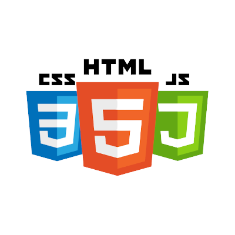
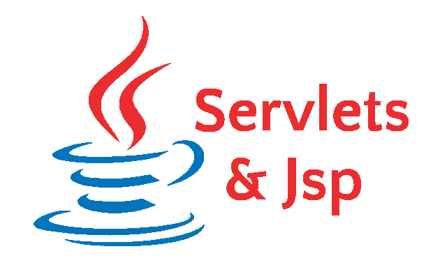
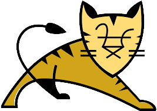
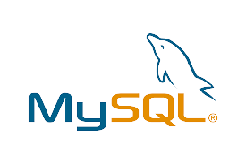

액티브 시니어란?
액티브 시니어 백엔드 기술자 이지원입니다.
액티브 시니어는 정년 퇴직 이후 시간적, 경제적인 여유를 기반으로 사회활동에 적응적으로 참여하는 50~60대를 말합니다.
새로운 제품이나 유행을 흡수하는데 적극적이며 가격보다 품질을 중요하게 생각하고, 생활의 안정을 추구하는 특성이 있다.
우리 홈페이지는 이러한 액티브 시니어들의 정보 공유를 위한 홈페이지 입니다.
홈페이지를 만들게 된 목적
인간의 활동 가능 연령대와 생존기간은 높아지고 있는데, 사회가 아직 그것을 못받아 들이고 있다.
정년 후에도 아직 일을하고 싶은 사람도 있을 것이고, 취미로 사람들과 모여 엔터테이먼트를 하고 싶은 사람도 잇을 것이다.
하지만 시니어 구직에 대한 정보도 인터넷에서 찾기도 힘들고, 정보 취합도 잘 되어있지 않다.
그리고 따로 커뮤니티 같은 것도 없었다. 은퇴를 하고 나이를 먹으면 활동량이 자연스럽게 줄고, 움직임이 적어지고 우울증에 시달리는 사람이 많다.
자신이 여전히 가용성 있는 사람이라는 것을 인식할 수 있게 하고, 활동적으로 할 수 있는 무언가 할일을 제공하는게 본 사이트의 취지이다.
은퇴 후에도 이전에 일했던 기술력이 사라지는것이 아닌데도 본인의 기술을 활용하지 못한 채 일하는 시니어들도 많았다.
이러한 액티브 시니어들이 활동할 수 있는 커뮤니티 + 정보를 제공하는 사이트를 만들고자 한다.
스마트폰을 사용하지 못하던 시니어들을 갔다. 신규 시니어들은 50대때 부터 스마트폰을 사용해왔던 세대이기 때문에 시니어 대상 플랫폼을 만들어도 충분히 참여 가능할 수 있을거라 생각한다.
홈페이지 기술




#사용 기술
jsp, servlet, apache tomcat, html, css, js, mysql, java